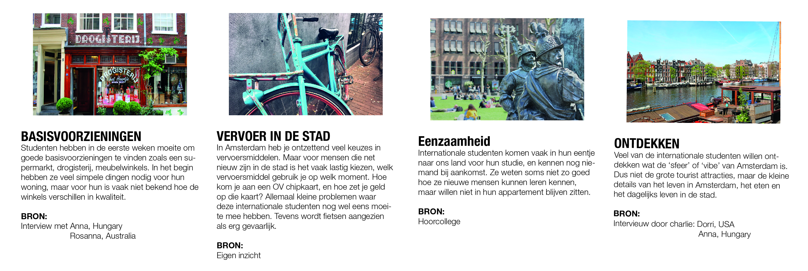
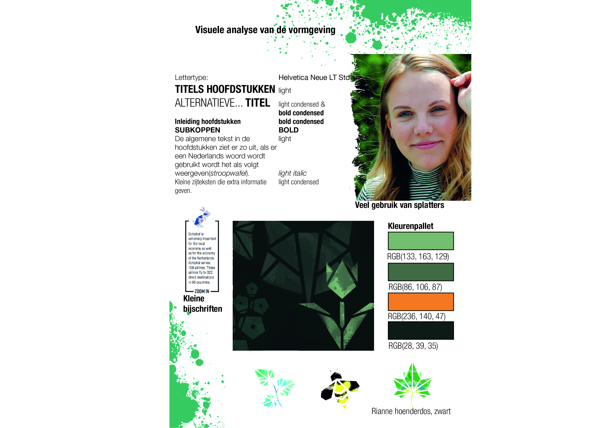
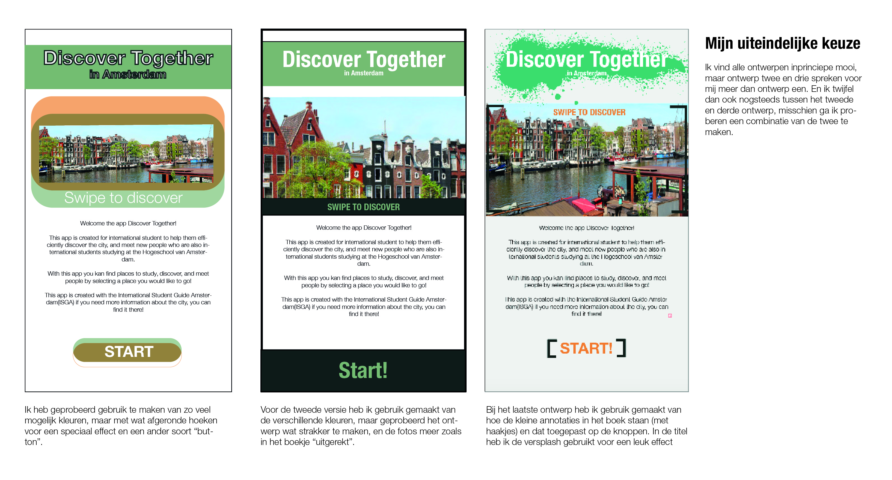
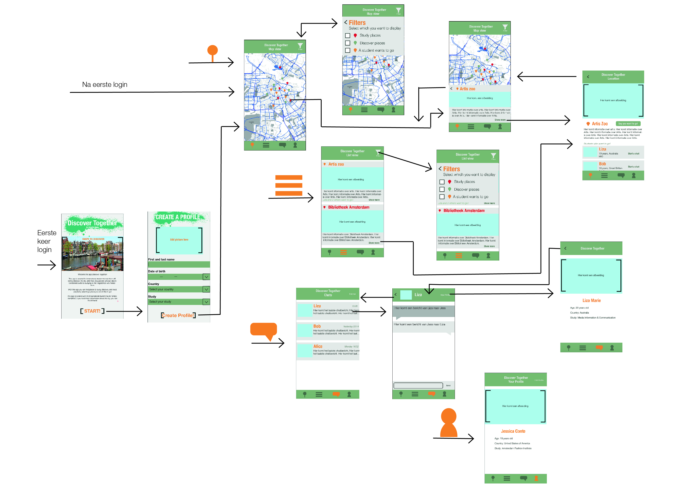
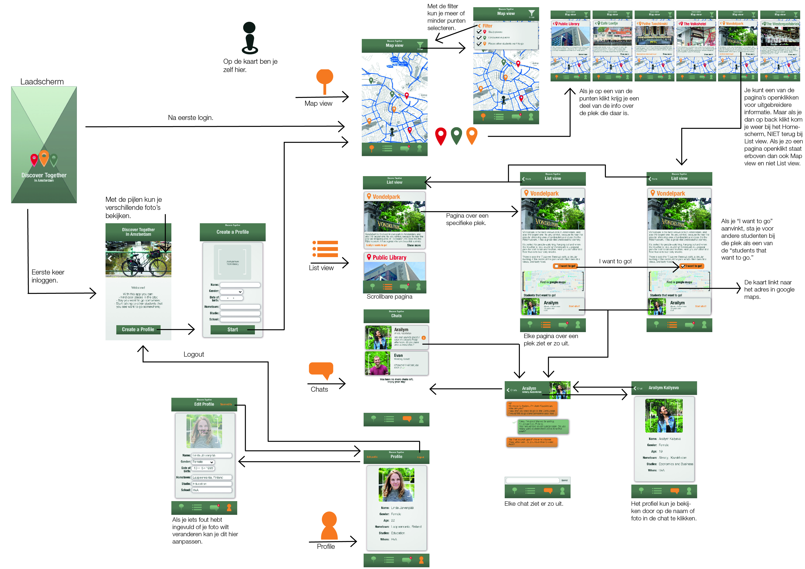

Vanuit een individueel project kreeg ik de opdracht om een app te ontwerpen die buitenlandse studenten die in Amsterdam kwamen studeren zou ondersteunen tijdens hun periode. Dit kan zijn op verschillende vlakken: studie, sociaal, cultureel of bijvoorbeeld routes.
De app moest een ondersteuning zijn van de ISGA: International Student Guide Of Amsterdam. Deze gids word aan het begin van elk studiejaar uitgegeven aan de nieuwe buitenlandse studenten.
FASE 1 - Debriefing
Onderwerpen

In de eerste fase van het project moesten we goed kijken naar de gegeven opdracht en de ISGA. Vanuit deze twee punten gingen we ideeen genereren van verschillende onderwerpen waar je internationale studenten bij zou kunnen helpen tijdens hun periode in Nederland. Deze punten hebben we kort samengevat.
Visuele Analyse

Ook hebben we een visuele analyse gedaan van de vormgeving van de ISGA, de app moet hierop gaan aansluiten.
FASE 2 - Eerste concept
Storyboard
Tijdens de tweede fase focuste we ons op het bedenken van een eerste concept. Vanuit de punten eenzaamheid en ontdekken heb ik mijn idee gevormt: een app waar studenten leuke plekken vinden om te studeren en ontdekken, en waarmee ze met andere studenten op die plek kunnen afspreken. Het idee is uitgewerkt in een storyboard.
Visuele uitwerking

Voor ons eerste idee hebben we ook nagedacht over de eerste visuele uitwerking. Ik heb drie versies uitgewerkt om daaruit mijn keuze te kunnen maken.
Flowchart

Verder heb ik een flowchart gemaakt om vast na te denken over welke schermen en menuonderdelen er allemaal nodig zouden zijn voor deze app.
FASE 3 - Testen en uitwerking
Testen
Mijn concept en de bijbehorende app heb ik verbeterd door het te testen met meerdere studenten. De aanpassingen heb ik hierboven kort benoemd.
Uiteindelijke flowchart

In de uiteindelijke flowchart is de happy flow maar ook de uitwerking van de schermen te zien. Sommige schermen hebben verschillende states, die zijn naast elkaar weergeven.